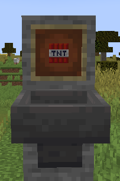

非主要页面大部分是用来进行网站调试的页面.
你在一般情况下不应访问到此页.
要前往主要页面,
请删除此页的网址的最后一个 / 后面的内容.
by sky_bow_chrs (Puremilk Luo Xiang)
xtsdcb69, Furrycalin revised
This ordinance start using from August 5, 2021.
The right of final interpretation of this ordinance is owned by Puremilk Operators.
This rule has been temporary disabled.
In the following rules, In text similar to "B3D", First character: B means ban, M means mute, D means de-op; Second character: The number is the affect time, P means permantly; Last character: D mean day, H means hour, M means minute. If there is a + sign after it, a similar text will appear after it (example B2D+M7D)，means ban 2 days and mute 7 days. If there is a + sign after a string of text, it means that this is the recommended minimum value; if there is a - sign, it means that this is the capped value.
I. Playing Ordinance
1. Please play in a harmonious and friendly manner. Read these regulations carefully. If you have any questions, you can consult the operators to solve them, or read the punishment regulations below.
2. Please refrain from snorting fragrance, making insulting or discriminatory remarks, or spamming the screen (please move down the rules for judging spam the screen), or even direct spray to affect the experience of others.
3. Please don't use memes too much.
4. Please don't urge operators to make videos or trolling (Will come when it's time pwp)
5. If you are punished, please do not report to operators. The punishment method of operators is strictly in accordance with this ordinance and the result of collective discussion.
6. Please don't publicize other servers awa
7. Grouping is good, please be moderate.
8. Please do not create, believe, or disseminate negative conclusions before the results of an incident are dealt with.
9. Don't blame others for being dead because of yourself.
10. Don't make negative remarks just because of the change of the world. (World maps will share out pwp)
11. Please record the large buildings outside the Enderman tower or the ultra-low efficiency spawning tower before you build it.
12. Subjective criticism of other players or settlements is prohibited.
13. Don't interfere with operators awa
14. Please be harmonious and friendly to new players, don't persecute new players to equip the equipments with Bind Curse!!!!! Typical case:
("I'm a good person in this server, give new players hats with full enchantments freely, tp me if you need", Turtle Shell with Bind Curse)
15. The server can manually switch PvP. For the friendly experience of players, please do not open PvP at will.
二、处罚条例
1. 言论类
(1) 刷屏: 根据刷屏频率判断，方式为截取其开始的时间到结束的时间段，按照发的内容 (相同或接近) 占本时间段的比例处罚，处罚方式为 禁言封顶时间 * 刷屏占的比例，当占比大于等于30%时可进行处罚。
(2) GHS: 根据次数判断，方式为截取其开始到结束的时间段，时间段内次数大于等于1时进行处罚。
(3) 言语辱骂: 如果有明显恶意倾向就开始处理，根据词数判断，方式为截取其开始到结束的时间段中玩家的话，语段内出现1~5次进行禁言处罚，语段内出现大于5次时将进行封禁处罚。
(4) 评头论足: 如果对其他聚落或玩家发表负面言论，(处罚等级1, B1D+).
| 言论类判定基本规则(以下均为5分钟内统计,惩罚力度视情况而定,这里只给出建议) | ||||
|---|---|---|---|---|
| 程度 | 刷屏 | GHS | 言语辱骂 & 评头论足 | |
| 轻度 | 3 ~ 4 条 (M10M) | 擦边球类但并未多大影响 (M20M) | 很直接的辱骂言论 ("***的", "你像个大**"等) (M1H) | |
| 中度 | 5 ~ 6 条 (M30M) | 不正当言论就是那些嗯嗯啊啊的 (M1H) | 比较直接的辱骂言论 ("你待在地球就是污染空气"等) (M4H) | |
| 重度 | 7 ~ 8 条 (M2H) | 暗示或明显暗示或直接类的黄色言论 (M1D) | 比较暗示的辱骂言论以及阴阳怪气的 ("真可笑", "66"等) (M1D) | |
| 严重 | 9+ 条 (M1D+) | 发布证实为黄色链接或黄色图片或很严重的黄色言论 (B2D+M7D) | 谁听了心里都不舒服的侮辱言论 ("蚌埠住了家人们", "[流汗黄豆]"等) (B1D+M3D) | |
* 广告类禁止连续发送超过3条 (含)
** 禁止卡BUG给我刷屏一下发某些文字一下发别的文字
*** 管理不会因为你发违禁词就会给你判定违规，而是根据你当前的心情判定
**** 如果误把互相开玩笑的禁了请及时QQ联系，禁止骂完就说我们互相开玩笑的，当禁言是闹着玩的啊 (有案例)
2. 财产纠纷类
(1) 入室盗窃: 根据所盗窃物品分为2种情况处理:
A: 如果盗窃物品相对不稀有和量少 (如1组石头, 24枯木)，双方进行协商且由盗窃方赔偿物品 (原样归还); (处罚等级1, B2D-)
B: 如果盗窃物品量大或者稀有 (如附魔金苹果，以0.5组为单位的钻石，以组为单位的青金石等)，由盗窃方赔偿物品 (原样归还) (处罚等级1, B7D). 部分玩家可能存在死不承认，拒绝归还的现象 (处罚等级1, B10D).
另外，如果找不到盗窃方，则由管理先进行赔偿，再通知盗窃方的前提下实行上述处罚方式。
(2) 遗体纠纷: 分为2种情况:
A遗体存在且被他人捡走，应迅速归还，如果捡走人不在请联系管理商议 (帮忙通知捡走人)，如果死不归还或承认，管理强行开背包, 末影箱等容器寻找; (处罚等级1, B7D)
B遗体因为玩家原因不存在，如果是被玩家恶意损毁，管理赔偿。(处罚等级2, B12D)
* 恶意损毁标准: 岩浆烧毁, 丢到虚空, 炸毁等，并且是玩家有证据当场做的; 如果是玩家无意行为直接导致，请协商处理; 如果是玩家无意行为间接导致，则不做处理，且失去装备者禁止私下报复 (典型案例:玩家A无意挖了小黑塔的一个方块导致玩家B在半小时后因为不看路不小心掉入虚空，则玩家A和管理不做赔偿); 另外，装备自动刷没也不赔偿; 三叉戟 (没有附魔忠诚的)自己扔出去刷没不赔偿，如果是捡到者扔出去的话导致刷没，则捡到者赔偿。
** 如果意外丢失物品或如何，未及时与管理员联系调查，无论是不敢还是什么原因，对管理或服务器造成不良影响的 (处罚等级1); 严重者累计惩罚。
(3) 陷阱: 同上。
* 陷阱判断标准: 导致玩家死亡, 有相关收集装置或装备丢弃装置。如果是不慎掉入小黑塔等有自动排放装置的正规装置，则不做赔偿。
(4) 垄断物价: 如果一件物品的市场售卖价格离谱或者一些稀有物品的售卖途径少的离谱 (典型例子: 鞘翅)，请通知管理，服务器会对其进行制裁或者相关调整。(处罚等级2, B30D-)
(5) TP致死: 如果因为TP他人导致的自己死亡，后果自负; 如果因为TP他人导致他人死亡，则移交至 2.(2) 处理。
(感谢这位大聪明玩家对本条作出的贡献)
3. 外挂BUG类
(1) MOD: 不得使用灵魂出窍, 一键放置, 跑酷辅助, 服务器种子获取等模组，一旦发现利用模组矿透等行为 (处罚等级1, B7D); 可以使用投影, 小地图, 自动钓鱼等模组。另外，投影不能开启Easyplace功能。严禁获取服务器种子 (处罚等级3).
(2) 外挂: 不得使用X-Ray, KillAura, Speed, Fly等外挂配置。(处罚等级2, B14D)
(3) BUG: 如果上报被确认为BUG并有较大影响性，奖励限定玩家头颅 (或者其他?)；如果利用未查出或已查出的BUG进行符合处罚条例的行为，在此行为的基础上 (处罚等级+1). 寻找本条例的BUG并上报同样有奖励。
4. 设施跑图类
(1) 音量诉讼: 如果制造出噪音设施，并且影响到玩家正常游玩，拆除设施。(处罚等级1, B3D)
(2) 设施: 如果未备案制造需备案设备，拆除处理; 如果并不了解规则没有及时备案可以紧急备案，禁止拖着不备案; 仅允许发现未备案设备后3天内备案，否则强制拆除; 该玩家或城镇下一次建造设施时，必须先备案，再建造; 再次违反条例，设施所有者 (处罚等级1, B7D)。如果因为设施效率纠纷，私下协商; 如发现恶意抢效率小黑塔，拆除并且剥夺建塔权利。如果发现破坏设施且可修复的，按 5.(2) 处理，如果不可恢复，(处罚等级1, B3D) 并给设施拥有者适当赔偿。
(3) 卡服: 如有设施卡服，拆除处理，恶意卡服 (处罚等级1, B3D) 并且剥夺建造设施权利。如果因为跑图将服务器TPS急剧降低或者内存占用急剧扩大以至于影响玩家游戏体验 (延迟) ，(处罚等级1, B3D) 处理，如果利用 3. 跑图，(处罚等级+1).
(4) 设备纠纷: 如果有他人未经同意使用私有设施，需归还取走物品; 死不归还 (处罚等级1, B7D).
5. 建筑类
(1) 违章建筑: 如带有明显暗示, 辱骂, 歧视等的建筑, 词汇等 (包括但不限于方块和告示牌)，拆除 (处罚等级1, B3D).
(2) 领地纠纷: 如果有外来人员在领地为未经过允许建筑，领地主人与其协商去留; 如果有外来人员破坏建筑，管理复原建筑并且根据 破坏程度 处理。
(3) 恶意地形改造或破坏: 根据 破坏程度 处理。
(4) 破坏公共场所: 根据 破坏程度 处理。
6. PvP类
必须公平公正进行PvP活动，只要涉及玩家之类的伤害即根据PvP类处理。
(1) PvP如果为两个人互相约定打的话，严禁对对方进行言语侮辱, 贬低对方, 阴阳怪气, 流汗黄豆之类的以及使用作弊类物品或模组，违者被举报证实 (处罚等级1).
(2) PvP如果为个人类城镇活动，必须由举办人 (镇长或镇长指定一个成员) 指定公平公正的规则和奖励制度，举办私人活动要向管理提出申请备案以便方便查询; 如果没有小镇的话可以指定你们一帮朋友其中一个作为代表并上报管理。
(3) 个人举办活动必须要优质，不要求你太优质什么的但不能以类似 "免费发放物品xxx" (这里的意思是活动内容不可包含并不是你就不能送别人东西了), "杀死牛奶或管理奖励xxx". 建造一些以上方建筑类规则违规的，以 言论类 等条例违规的将会受到惩罚。
(4) PvP如果是牛奶整活，如果没有比较大的问题，请不要说坏话之类的 (你都上电视了还不满意).
(5) 如果PvP并没有任何约定且无端冲突矛盾等引起的，双方一并惩罚。(处罚等级1)
(6) 如果PvP造成损失请大胆向举办方或者个人提出合理赔偿，如果举办方强硬不赔偿解决将会受到惩罚 (处罚等级1). 另外如果自找苦吃后果自负。
(7) PvP如果为管理举办的公共活动，请跳转至 大型活动类.
7. 大型活动类
严禁:
(1) 在活动开始前发表不当言论;
(2) 严禁在活动开始时大声喧哗或无关人员试图从观战场地等进入比赛场地;
(3) 诽谤说管理黑幕;
(4) 在活动颁奖时大声喧哗，试图从观众席跑到颁奖台或乱发射弓箭烟花或鞘翅飞行等扰乱秩序，违者 (处罚等级1/2);
(5) 在比赛结束后提出不满或黑幕，管理保证比赛公平公正!
8. 处罚方式
(1) 处罚等级是经过处罚次数和一些条例运行的，具体规则如下:
| 1级 | 触犯相关条例或第1次被处罚 | B/M3D | B/M7D |
|---|---|---|
| 2级 | 触犯相关条例或第2次被处罚 | B30D/M10D | B45D/MP |
| 3级 | 触犯相关条例或第3次被处罚 | BP |
* 处罚等级达到3级并且非常严重的 (详情看下方 (7) 其他相关需求), 将抹除在服和群内痕迹 (花名册除外).
计算公式：前科处罚等级 (B/M) + 本次处罚等级 (B) + 本次处罚等级 (M) = 最终处罚 (B) + 最终处罚 (M)
(2) 禁言和封禁分开独立计算。比如一个玩家第一次开纪，但是同时TA第二次口吐芬芳 (达到上文叙述条件)，则该玩家最终处罚 = 封禁时间 + 禁言时间。如禁言和封禁都需要执行，则先执行封禁，解禁后进行禁言。
(3) 数罪并罚原则: 如果玩家一次行为符合多条上述条例，则叠加计算。
(4) 前科记录: 如果以前犯过事，则将处罚记录的处罚等级当做前科等级 (如一名玩家受过处罚等级1的处罚，则前科等级=1，累加计算)。本条例正式实行之前的处罚按次数计算。如果之前已经被封禁2次，则下一次处罚按照 8.(5) 处理; 同理，如果之前已被封禁3次或更多，则下一次处罚总是 BP.
(5) 事不过三原则: 无论违反了什么规则，只要在有两次前科 (禁言和封禁加起来) 的情况下进行第三次违规:
如果这一次的处罚是禁言: M14D, 且下一次处罚总是 BP.
如果这一次的处罚是封禁: BP.
(6) 处罚不降低原则: 如果在处罚实施时发现了BUG或者做了什么对服务器有利的事情，可以等到解封时获取奖励，但是处罚时长不会减少。
(7) 永久处罚原则: 玩家被执行 BP/MP 后的所有周目都将被继续执行 BP/MP.
(8) 有期处罚不延续原则: 玩家被执行有期处罚时若周目结束，则下一个周目不继续执行剩下的处罚。
(9) 破坏程度:
① 换算: A为处罚等级1的3D, B为处罚等级1的7D, C为处罚等级2的10D.
② 定义:
A: 造成建筑轻微损坏 (1%~33%) 且需要一定时间修复 (分钟或小时为单位)
B: 造成建筑大量损坏 (34%~66%) 且需要时间修复 (天为单位)
C: 造成建筑完全损坏 (67%~100%) 且修复时间巨长 (月为单位)
注：这里的建筑指有一定外观的建筑屋，你不能拿个茅坑或火柴盒就来啊 = = 破坏茅坑、火柴盒等小型建筑，破坏者必须进行补偿，除非被破坏者不进行责任追究，否则如不补偿，将按照 2.(1) 进行处罚。
(10) 其他相关需求
1. 严禁频繁向管理或牛奶提出整活需求，出事还不承认的:
A: 如造成轻微不良影响 (其他玩家不愿意等) (处罚等级1)
B: 如造成中等不良影响 (其他玩家十分不愿意，且背后指责等) (处罚等级2)
C: 如造成严重不良影响 (导致其他玩家拉拢其他玩家对管理或服务器侮辱诽谤诬告陷害，以致服务器人数明显下降，导致管理被冻结权限等) (处罚等级3)
2. 严禁在背后说管理或牛奶的坏话，无论是处于何种心情还是开玩笑，有个度量，如果造成不良影响 (处罚等级1)
3. 如果有意见或需求请大胆向管理提出，我们会及时改正和帮助，严禁辱骂管理，视严重性 (有案例啊) (处罚等级1/2/3)
4. 如果有整活意见可适量向牛奶私聊提出，向管理私聊也可转告到牛奶，但不可过分要求。如果意外丢失物品或如何，未及时与管理员联系调查，无论是不敢还是什么原因，对管理或服务器造成不良影响的 (处罚等级1).
5. 适量对管理或牛奶做出恶搞言论或者恶搞图片，如造成不良影响管理讨论决定 (口头警告或处罚等级1).
6. 严禁迫害萌新，欺骗刚入服不久的萌新干苦力 (不给工资那种) 或者戴上绑定诅咒装备awa!!! 情节严重的 (处罚等级1)
(不严重但是提供了本条的灵感)
7. 手残在家旁边开启劫掠后果自负= =
8. 不要暗恋管理发布不正当言论，求你们啦!!! 如对管理造成心理影响将会追究责任。
9. 严禁通过各种手段获取原版生存无法获取的物品 (如基岩, 屏障等，整活除外) (处罚等级1). 如还通过这些物品造成了其他违反本条例的行为，处罚等级叠加。
* 严禁对服务器进行网络攻击!!!
* 如被查到将会追究法律责任!!!
以上行为均为有案例且造成严重影响，希望不会再次发生!
三、管理条例
1. 在纠纷中禁止除纠纷双方及在场有直接证据证人的玩家对当事双方和处理的管理强行介入。
2. 禁止对别的玩家或聚落主观评头论足 (不正当言论).
3. 任何玩家都可对处罚结果进行合理申请，但需要经过管理商讨同意。
4. 活动场所神圣不可侵犯。
5. 活动结果可发表适当意见，禁止说举办方黑幕! 举办方举办活动不是为了什么人盈利! 比赛结果公平公正公开，管理承诺不会受贿!
6. 严禁玩家RMB与游戏内虚拟物品贸易 (除了登录服你充值奶币啊).
7. 活动周期长 (1~3个月至少1次，最多3次，除特殊情况)，质量高，奖品合理，如果有多个提案，可以发起投票按照票数多少决定举办顺序。
8. 补偿需讨论。
9. 禁止神权。
10. 对于玩家要求，应酌情帮助，对于要用指令的，三思而后行。
11. 整活需谨慎（懂的都懂），禁止乱整活，瞎整活和过度整活。
* 如果管理因为整活导致玩家财产损失未及时补偿，请大胆提出，如果管理没有看见请 (/msg) 重复几次或QQ私聊，看见了一定会补偿的。
** 管理整活可能非恶意，如有意见合理提出，我们会及时改正，但如果在背后夸大事实侮辱诽谤诬告陷害辱骂管理:"这管理当的真不是个东西","tmd这管理整死我好几次了，有毛病一样","这管理还不如让我当","这管理整死我东西都没赔偿，烦死我了"(见上一条)之类的话,而不是正面向管理提出:"可以不要再整我了吗，我不喜欢，甚至有点烦了"之类的话，会导致管理对这方面出现心理阴影，管理基本都是老实人，你这样会导致管理心情变差，遇到脾气不好的管理你还可能会出事awa， 感谢理解!
12. 天子犯法与庶民同罪，管理犯条例由管理商讨DEOP处理。
13. 本条例的所有处罚规则对于牛奶均不适用，但牛奶仍需要进行自我规范，不能违反本条例。
14. DEOP规则: 多次触犯叠加，并且DEOP时间按照服务器真实开放时间算，不同于玩家。
| 管理员犯错处罚规则 | |||
|---|---|---|---|
| 严重性 | 态度良好且知错就改 | 知错不改怀恨在心 | 攻击牛奶或服务器造成不良影响 |
| 轻微犯事未造成影响 | 记过原谅或 D5D | D10D | D30D |
| 比较严重造成影响 | D10D | D30D | B15D+DP |
| 非常严重造成很大影响 | D30D | B15D+DP | BP+DP |
* 被诬告陷害的: 被举报人D7D; 如举报人被查证无此事或夸大严重性 (无论夸大多少) 属于欺骗，诽谤和陷害 (处罚等级1/2) 或 8.(3) , 被举报人夺回OP权限，且举报人向大众和被举报人虔诚道歉; 如被查证句句属实，属于欺骗牛奶和其他管理 (再D5D且虔诚道歉)
附录1: 机器备案
在服务器里不能制造的机器有: 红石高频机器, 全物品, 实体密集型机器 (比如利用实体积压刷怪的机器), 刷沙机 (想啥你都建不了), 刷地毯机, 铁轨机 (同刷地毯机)，以及达成以下任意一个条件的建筑/设施:
(1) 任意机器实体效率超过50/s的;
(2) 任意红石机器启动后对服务器TPS影响大于等于0.1的;
(3) 任意刷怪面积超过60*60的;
(4) 任意非纯手动农田超过16个区块的;
(5) 任意机器个体侦测器中，粘液块, 活塞, 粘性活塞的数量总和超过300的。
服务器无须备案机器: 小黑塔，超低效率刷怪塔
附录2: TNT
TNT吗.......好问题，你甚至都拿不了TNT= =, 但是你可以破坏自然生成的TNT然后拾取，拾取后?你就再也不能把它放到箱子里了awawawa. 不过还是有解决方案的，TNT可以放到物品展示框里去，建造下图装置你甚至还可以实现TNT装箱 (发射器依然不能用)
放进去之后左键打掉就可以了
附录3: 公告和称号
没什么好说的，发挥想象力吧。
但是如果发的公告或者称号涉及ghs或者带有脏词什么的
你 奶 币 没 了 a w a